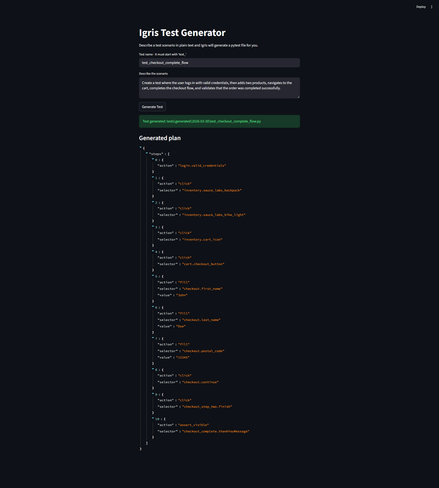
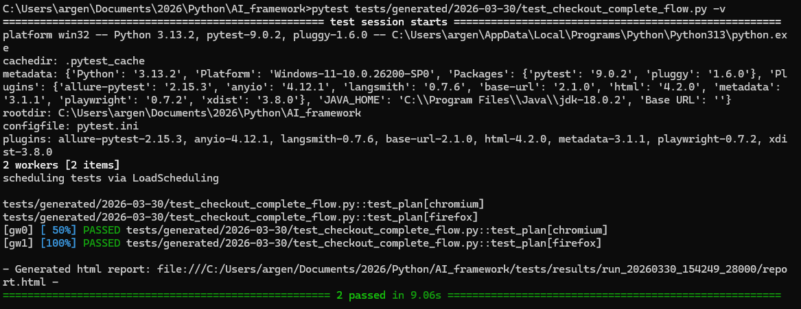
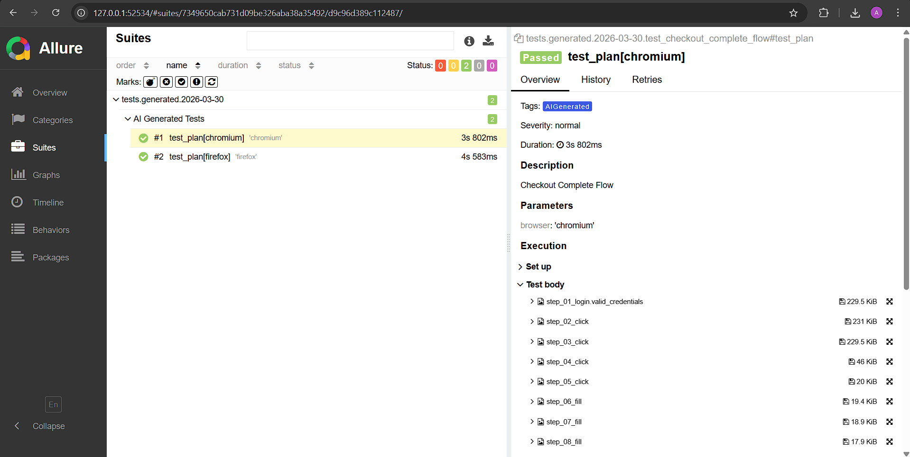
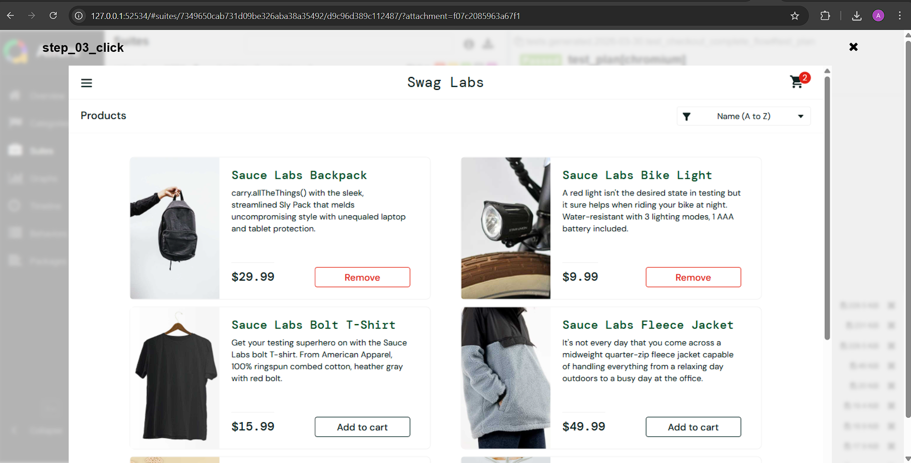
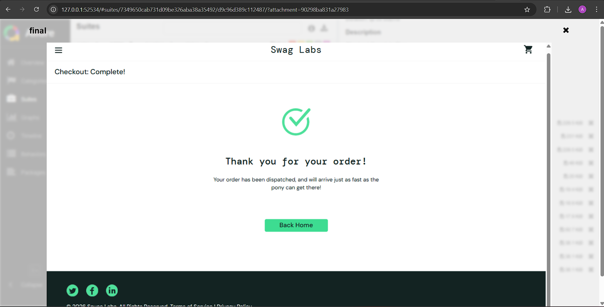
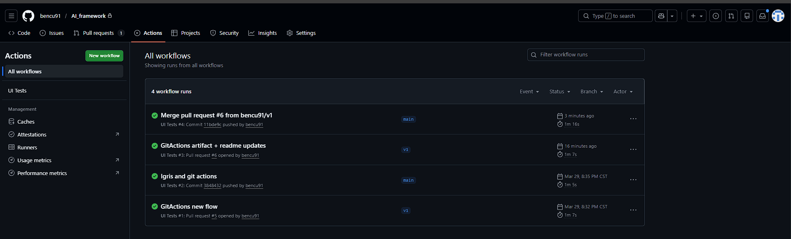

Igris
AI-Powered Test Automation Framework

What Is Igris?
Igris is a test automation framework that removes the scripting bottleneck from UI testing. Instead of writing test code manually, a QA engineer — or anyone on the team — types a plain text instruction describing the scenario. Igris sends that instruction to an AI agent, receives a structured test plan back, and runs it through Playwright automatically.
The end result: a full test execution with per-step screenshots embedded in an Allure report, produced from a single sentence. No selectors, no code, no test structure required from the user.
Built as a senior QA portfolio project targeting SauceDemo, a standard e-commerce test application. The framework covers login, cart, and full checkout flows — enough to demonstrate a real, end-to-end automation pipeline powered by AI.
How It Works
The flow from instruction to report is straightforward:
You type: "Login, add two products to the cart, complete checkout, verify confirmation"
↓
Igris Agent → calls OpenAI, receives a JSON test plan
↓
script_creation.py → converts the plan into a pytest file
↓
pytest runs it → AI_plan_translator.py drives the browser step by step
↓
Timestamped results folder → screenshots + Allure reportEach step in the plan is executed by the translator, which resolves human-readable selector names (like cart.checkout_button) to actual CSS selectors defined in per-page JSON files. If a selector changes in the HTML, you update it in one file — every test using it is automatically fixed.
The Design Decision That Makes It Portable
The most deliberate choice in Igris is what the AI doesn't produce. Instead of generating Python code or Playwright scripts directly, the AI outputs a language-agnostic JSON plan. A separate translator layer reads that plan and executes it.
This is the Interpreter Pattern — and it has a specific purpose: the framework was designed knowing it could be adopted by different teams, in different languages, on different projects.
| Target | What changes | What stays the same |
|---|---|---|
| TypeScript + Playwright | Translator rewritten in TS | AI agent, JSON plan, selectors |
| Java + Selenium | Translator + selector resolution | AI agent, JSON plan structure |
| Cypress | Translator maps to cy.* calls | AI agent, JSON plan |
| Mobile (Appium) | Translator + mobile selectors | AI agent, JSON plan structure |
The AI layer stays unchanged. The JSON plan stays unchanged. Only the translator is swapped. A team already on Java doesn't need to adopt Python — they write their own translator and plug it in.
What Makes It Reliable
A few specific decisions were made to keep the AI output consistent and the test execution trustworthy:
- Screen-aware AI — the agent's prompt includes a map of the application's screens in order. The AI knows which selectors belong to which screen and never mixes them up across steps.
- Constrained actions — the AI can only produce actions the translator knows how to run. No hallucinated methods, no unsupported steps.
- Assert reasoning — a chain-of-thought rule in the prompt forces the AI to analyze the element type before choosing an assertion. This reduces false positives and makes assertions more meaningful.
- Deterministic output — the agent runs at temperature 0. The same instruction produces the same plan every time.
- Dual screenshot storage — every step screenshot is saved to disk in a timestamped folder and embedded in the Allure report. Evidence survives even if the report is regenerated.
CI/CD — No API Key Needed
The smoke test pipeline on GitHub Actions runs the full checkout flow on every push to main — without calling OpenAI. The CI test is a manually written pytest file, keeping the pipeline fast, deterministic, and free to run.
A separate config.ci.yaml switches the framework to headless Chromium and disables per-step screenshots automatically. No code changes needed between local and CI runs — the environment variable does the switch.
After every run, the Allure HTML report is uploaded as a downloadable artifact directly from the Actions dashboard.
See It In Action
Instruction used for this demo:
"Login with valid credentials, add the Sauce Labs Backpack and Sauce Labs Bike Light to the cart, complete the checkout flow, and verify the order confirmation."
Step 1 — Plain text input via Streamlit
The user types the scenario. No code, no selectors, no test structure required.
Step 2 — AI generates the JSON test plan
The agent interprets the instruction and returns a structured plan. Every action maps to something the translator knows how to execute.

Step 3 — Parallel execution across browsers
The plan runs via pytest across Chromium and Firefox simultaneously using pytest-xdist. Both runs appear as separate test entries in the report.

Step 4 — Allure report: suite overview
All runs visible in the Allure dashboard, organized by suite and browser.

Step 4 — Allure report: products verified
Per-step screenshots embedded in the report. Both products from the instruction confirmed as added to the cart.

Step 4 — Allure report: order confirmed
The final assertion verifies the confirmation screen. Test closes with a validated successful transaction.

Step 5 — CI green on GitHub Actions
Every push to main triggers the smoke test. Allure report generated and uploaded as a downloadable artifact automatically.
